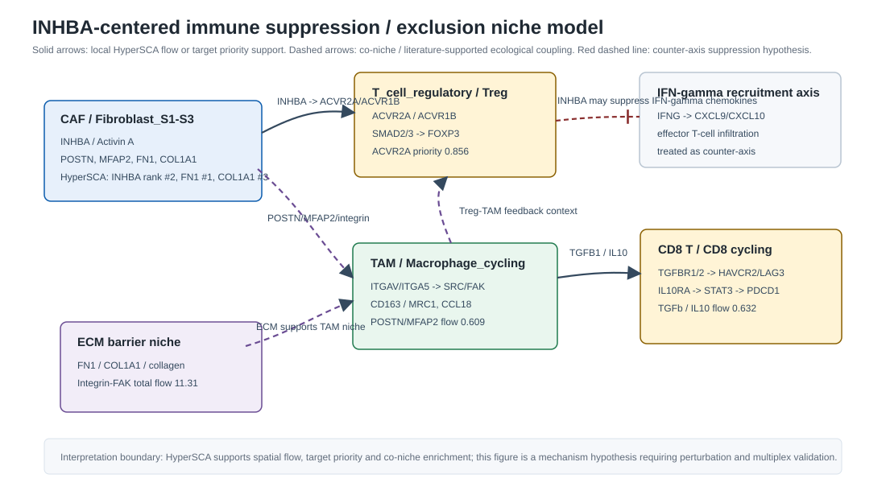
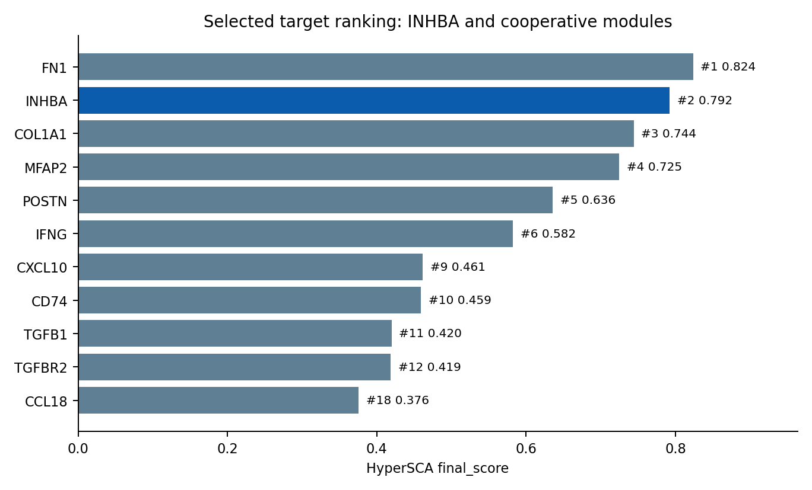
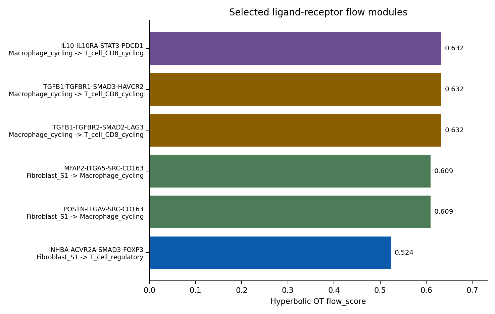
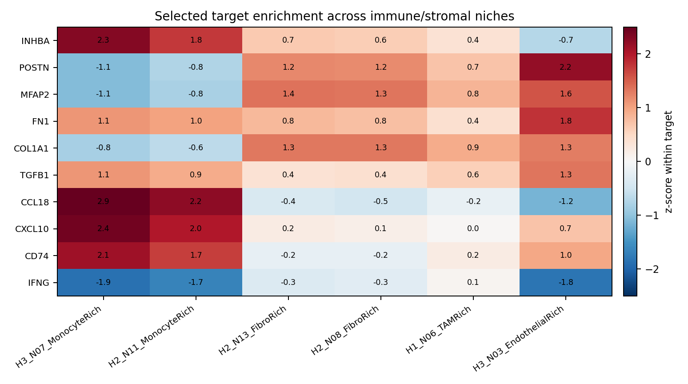

INHBA 与免疫抑制/免疫排斥生态位的协同靶点和细胞模块
摘要
本报告回答一个具体机制问题：在当前 HyperSCA MSS 型结肠癌整合结果中，INHBA/Activin A 除了通过 ACVR1B/ACVR2A-SMAD2/3-FOXP3 轴作用于 Treg 之外，还可能与哪些靶点和细胞模块共同塑造免疫抑制或免疫排斥生态位。结论是，最稳健的模型不是单一配体-受体对，而是一个 CAF-Activin/Treg 与 CAF-ECM/TAM、TAM-TGFβ/IL10-CD8 exhaustion 相互耦合的空间生态模块。
证据边界：HyperSCA 提供空间流向、靶点排序、生态位富集和反事实/动态模型线索；Zotero 和网络文献提供生物学可解释性。二者共同支持机制假说，但仍不能替代 INHBA 阻断、受体阻断、空间多重染色和功能共培养实验。
核心回答
INHBA 最直接的协同靶点/细胞是 ACVR2A、ACVR1B、SMAD2/3、FOXP3 与 T_cell_regulatory/Treg。在免疫排斥生态位层面，它还与四类模块形成可解释的协同：POSTN/MFAP2-integrin-CAF→TAM、TGFB1/TGFBR-SMAD-HAVCR2/LAG3 的 TAM→CD8 exhaustion、IL10/IL10RA-STAT3-PDCD1 的 TAM→CD8 checkpoint、以及 FN1/COL1A1 ECM barrier。CCL18/CD74/CXCL10 是 MonocyteRich 生态位的伴随背景，其中 CCL18 更像免疫抑制伴随因子，CXCL10 更应解释为被 INHBA/Activin A 抑制的 IFNγ 招募反轴。
synergy_bliss 均为 0.0。因此，本文使用“协同”指空间生态协同和机制耦合，不把它写成已被动态药效模型证明的 Bliss 协同。
证据来源与检索范围
本报告以本地 HyperSCA 输出为主证据，文献只用于机制解释和可验证假说生成。报告资产位于 evidence_snapshot.json、 inhba_synergy_modules.csv、 selected_lr_flow_edges.csv、 selected_target_niche_expression.csv。
| 证据层 | 本地或文献来源 | 用途 |
|---|---|---|
| HyperSCA 靶点发现 | target_ranking.csv | 确认 INHBA、FN1、COL1A1、MFAP2、POSTN、TGFB1、CCL18 等候选靶点的排序和评分。 |
| 空间通信/OT 流向 | top_lr_flow_edges_all_modes.csv；pathway_summary_all_modes.csv | 确认 CAF→Treg、CAF→TAM、TAM→CD8 的方向一致性和 flow_score。 |
| 统一生态位 | target_niche_expression.csv；unified_niche_definition.csv | 确认 INHBA 与 MonocyteRich/FibroRich/TAMRich 生态位中的共同富集背景。 |
| 动态干预限制 | combination_ranking.csv | 确认 INHBA 与 POSTN/MFAP2 组合没有正向 Bliss 协同。 |
| Zotero 本地文献库 | INHBA、POSTN、CCL18 关键词本地命中 | 补充 INHBA/Activin A、POSTN+ eCAF、CRC ECM-CCL18 巨噬细胞极化的机制证据。 |
| 网络文献检索 | Nature、NPJ Precision Oncology、PubMed/PMC、BJC、Nature Communications 等 | 补充 TGFβ 免疫排斥、ECM/collagen 免疫治疗抗性、IL10/STAT3/PDCD1 等机制背景。 |
模型图

HyperSCA 证据汇总



| 模块 | HyperSCA 数值证据 | 细胞方向 | 解释等级 |
|---|---|---|---|
| INHBA-ACVR2A/ACVR1B-SMAD2/3-FOXP3 | Activin-SMAD 为 complete pathway；6 条 flow edges；OT direction consistency 1.0；INHBA→ACVR2A priority 0.856，INHBA→ACVR1B priority 0.658。 | Fibroblast_S1/S2/S3 或 CAF → T_cell_regulatory/Treg | 直接通路支持 |
| POSTN/MFAP2-integrin-SRC/FAK-CD163/MRC1 | POSTN→ITGAV→SRC→CD163 flow_score 0.609；MFAP2→ITGA5→SRC→CD163 flow_score 0.609；VisiumHD 聚合中 CAF→TAM flow 约 0.567。 | CAF/Fibroblast → TAM/Macrophage_cycling | 空间流支持跨癌种文献外推 |
| TGFB1-TGFBR1/2-SMAD2/3-HAVCR2/LAG3 | TGFb-SMAD 8 条边；total_flow 4.475；top flow_score 0.632；direction consistency 1.0。 | Macrophage/TAM → CD8T/CD8 cycling | 空间流支持CRC 文献支持 |
| IL10-IL10RA-STAT3-PDCD1 | IL10-STAT3 4 条边；total_flow 2.237；top flow_score 0.632；direction consistency 1.0。 | Macrophage/TAM → CD8T/CD8 cycling | 空间流支持免疫学文献支持 |
| FN1/COL1A1 ECM barrier | FN1 rank #1, score 0.824；COL1A1 rank #3, score 0.744；Integrin-FAK total_flow 11.31。 | CAF/pericyte/stromal ECM → T cell/TAM spatial access | 共生态位支持物理屏障需实验验证 |
| CCL18/CD74/CXCL10 MonocyteRich context | H3_N07_MonocyteRich 中 CCL18 z=2.906、CXCL10 z=2.418、CD74 z=2.115，INHBA 同在该生态位最高富集。 | Monocyte/Macrophage-rich niches with adjacent CAF signal | 共生态位支持CXCL10 是反轴而非抑制因子 |
机制论证
1. INHBA 的核心作用：CAF-derived Activin A 促进 Treg 轴，同时削弱 IFNγ 招募信号
HyperSCA 把 INHBA 定位为整合发现结果中的高优先级靶点：rank #2、final_score 0.792，并且在 Activin-SMAD 完整通路中给出 CAF/Fibroblast 到 Treg 的空间流向。受体层面，ACVR2A 是优先级最高的 INHBA 受体候选，ACVR1B 次之。下游解释为 SMAD2/3 到 FOXP3，符合 Treg 诱导的机制链条。
Zotero 与网络检索中，Li 等的 Acta Pharmacologica Sinica 研究显示 INHBA/Activin A 可削弱 IFNγ 信号、降低 CXCL9/CXCL10 并造成抗 PD-L1 反应下降；Hu 等在 INHBA+ CAF 研究中显示 Activin A 可通过 SMAD2 依赖的 PD-L1 表达促进 Treg 分化。Activin A 促进 Foxp3+ iTreg 的早期免疫学证据也支持该链条。由此，INHBA 在本报告中不是泛化的“促癌因子”，而是被定义为连接 CAF、Treg 和 IFNγ 招募反轴的空间免疫调节节点。
2. POSTN/MFAP2-integrin 模块：把 INHBA-rich CAF 背景连接到 TAM/CD163/MRC1
HyperSCA 的 OT flow 中，POSTN→ITGAV→SRC→CD163 与 MFAP2→ITGA5→SRC→CD163 是排名靠前的 CAF→TAM 方向流，flow_score 均为 0.609。VisiumHD 聚合结果也复现 CAF→TAM 的 POSTN/MFAP2 高流量边。生态位层面，POSTN 与 MFAP2 在 EndothelialRich/FibroRich/TAMRich 背景中富集，提示其作用更偏 ECM-CAF/TAM 支撑，而非直接 Treg 诱导。
POSTN+ eCAF 文献显示 POSTN 分泌与巨噬细胞趋化、CD163+ macrophage 丰度和 ICB 反应差相关。这与 HyperSCA 中 POSTN/MFAP2 指向 CD163/MRC1 的方向一致。因而，INHBA 的 Treg 轴可与 POSTN/MFAP2 的 TAM 轴共同构成“CAF 产生免疫抑制许可，TAM 维持抑制状态”的双臂生态位。
3. TGFB1 与 IL10 的 TAM→CD8 exhaustion 模块：把排斥生态位转化为检查点/耗竭表型
HyperSCA 将 TGFb-SMAD 与 IL10-STAT3 复现为 TAM/Macrophage_cycling 到 CD8/CD8 cycling 的高流量模块：TGFB1/TGFBR2/SMAD2/LAG3、TGFB1/TGFBR1/SMAD3/HAVCR2 和 IL10/IL10RA/STAT3/PDCD1 的 top flow_score 均可达 0.632，direction consistency 为 1.0。该证据不说明 INHBA 直接诱导 TGFB1 或 IL10，但说明 INHBA-rich 生态位附近存在一条强 TAM→CD8 抑制链。
结直肠癌和泛癌文献支持 TGFβ 促进 T cell exclusion，且 TGFβ 可通过 CAF/基质环境限制 CD8 T 细胞进入肿瘤核心。IL10/STAT3/PDCD1 轴则可解释 CD8 T 细胞维持耗竭或检查点高表达的状态。综合来看，INHBA 轴更像“入口处的 Treg/IFNγ 抑制器”，TGFβ 与 IL10 轴更像“生态位内的 CD8 功能刹车”。
4. FN1/COL1A1 ECM barrier：把免疫抑制变成空间排斥
FN1 是当前 target_ranking 的第一名，COL1A1 是第三名，二者与 INHBA 共享 FibroRich/MonocyteRich 生态位背景。Integrin-FAK 通路 total_flow 达 11.31，显著高于 Activin-SMAD 的 total_flow 2.652。这提示 ECM 模块不是 INHBA 的下游替代，而是更大的空间结构背景：CAF/ECM 建立屏障，INHBA/Activin A 在屏障中强化 Treg 与 IFNγ 抑制，TAM 模块进一步维护 CD8 exhaustion。
ECM 文献支持 collagen/fibronectin 相关基质可限制 T-cell access 或促进免疫治疗抗性。需要注意的是，HyperSCA 未直接测量 collagen fiber alignment、stiffness 或 LOXL2 活性，因此 FN1/COL1A1 的“排斥”解释仍需组织形态、二次谐波成像、胶原染色或空间蛋白验证。
5. CCL18/CD74/CXCL10：MonocyteRich 生态位的伴随模块
INHBA 的最高生态位富集出现在 H3_N07_MonocyteRich 和 H2_N11_MonocyteRich；同一生态位中 CCL18、CD74、CXCL10 均有高 z-score。Pinto 等 CRC ECM 研究显示，肿瘤去细胞基质可把巨噬细胞推向 IL10/TGFβ/CCL18 较高的抗炎样状态。该结果支持将 CCL18 视为 MonocyteRich 抑制生态位的一部分。
CXCL10 的解释必须更谨慎。HyperSCA 显示 CXCL10 在 MonocyteRich 中高表达，但 Li 等 INHBA 文献提示 INHBA/Activin A 可降低 IFNγ 诱导的 CXCL9/CXCL10 并减少效应 T 细胞浸润。因此，CXCL10 更可能代表一个被 INHBA 压制或失衡的抗肿瘤招募反轴，而不是与 INHBA 同向造成免疫抑制的正协同因子。
综合机制模型
| 层级 | 关键靶点/细胞 | 导致免疫抑制/排斥的机制 | 最直接的验证读出 |
|---|---|---|---|
| CAF-Treg 许可层 | INHBA、ACVR2A、ACVR1B、SMAD2/3、FOXP3；CAF/Fibroblast_S1-S3、Treg | Activin A 通过 SMAD2/3 促进 FOXP3/Treg 程序，并削弱 IFNγ-CXCL9/10 招募轴。 | INHBA ISH + FAP/αSMA + pSMAD2/3 + FOXP3 多重染色；INHBA knockdown 或 Activin A neutralization 后 Treg 比例下降。 |
| CAF-TAM 支撑层 | POSTN、MFAP2、ITGAV/ITGA5、SRC/FAK、CD163/MRC1；CAF、TAM | ECM-CAF 通过 integrin/SRC/FAK 信号支持 CD163/MRC1 阳性 TAM 或趋化 TAM。 | CAF-macrophage 共培养中阻断 POSTN/MFAP2/integrin/FAK，检测 CD163、MRC1、IL10、CCL18。 |
| TAM-CD8 抑制层 | TGFB1、IL10、TGFBR1/2、IL10RA、STAT3、HAVCR2、LAG3、PDCD1；TAM、CD8 T | TAM 向 CD8 T 细胞提供 TGFβ/IL10 抑制信号，推动 exhaustion/checkpoint 表型。 | 空间邻近区域中 CD68/CD163+ TAM 与 LAG3/HAVCR2/PDCD1+ CD8 共定位；TGFβ/IL10 阻断后 CD8 granzyme/IFNG 恢复。 |
| ECM 排斥层 | FN1、COL1A1、POSTN、MFAP2、integrins；CAF/pericyte/stroma | 胶原/纤连蛋白基质形成物理屏障，并通过 integrin/FAK/SRC 维持基质-免疫抑制回路。 | 胶原纤维排列、SHG、Masson/Sirius red、T 细胞到肿瘤巢距离、LOXL2/LAIR1 读出。 |
文献综合
本地 Zotero 命中最直接支撑 INHBA/Activin A 机制的两类文献：一类是 INHBA/Activin A 抑制 IFNγ 信号并降低 PD-L1 blockade 效果，另一类是 INHBA+ CAF 促进 Treg/PD-L1/SMAD2 相关免疫抑制。POSTN 与 CCL18 相关 Zotero 文献则支撑 CAF-ECM→TAM 与 CRC ECM→CCL18-high macrophage 的伴随模块。
| 文献主题 | 对本报告机制的贡献 | 证据边界 |
|---|---|---|
| INHBA/Activin A 抑制 IFNγ-CXCL9/10 并降低 anti-PD-L1 反应 | 解释为什么 INHBA 与 CXCL10 不是简单同向协同，而是可能压制效应 T 细胞招募反轴。 | 主要为小鼠肿瘤模型和泛癌/COAD 数据，需在本 MSS CRC 空间样本中验证。 |
| INHBA+ CAF 促进 Treg 与 SMAD2/PD-L1 机制 | 补强 HyperSCA 的 CAF/Fibroblast→Treg Activin-SMAD 轴。 | 核心机制来自卵巢癌 CAF，跨癌种外推需要 CRC CAF 验证。 |
| POSTN+ eCAF 与 CD163+ macrophage/ICB response | 支撑 POSTN/MFAP2-integrin-CAF→TAM 模块可能与 INHBA-rich CAF 生态位共同造成免疫抑制。 | POSTN 文献主要来自胃癌或泛癌 eCAF，CRC 中需验证 POSTN/MFAP2 与 TAM 的空间邻接和功能依赖。 |
| TGFβ 驱动 T cell exclusion | 解释 HyperSCA 中 TAM→CD8 的 TGFB1/TGFBR/HAVCR2/LAG3 模块如何把局部抑制转化为空间排斥。 | TGFβ 具有多细胞来源和强多效性，不能把所有 TGFβ 信号归因于 INHBA。 |
| Collagen/ECM 相关 immune checkpoint resistance | 支持 FN1/COL1A1/Integrin-FAK 作为免疫排斥结构背景，而不是单纯 marker。 | 需要组织结构层验证，RNA/空间流无法直接证明物理屏障。 |
实验验证建议
- 空间多重验证：同一 FFPE 切片检测 INHBA RNA/Activin A、FAP/αSMA、POSTN/MFAP2、FN1/COL1A1、CD68/CD163/MRC1、FOXP3、CD8A、LAG3/HAVCR2/PDCD1、CXCL10，重点比较 MonocyteRich 与 FibroRich 边界。
- CAF-Treg 功能验证：CAF/T cell 共培养中做 INHBA knockdown、Activin A neutralizing antibody、ACVR2A/ACVR1B blockade，读出 pSMAD2/3、FOXP3、PD-L1、Treg differentiation。
- CAF-TAM 模块验证：CAF/macrophage 共培养中阻断 POSTN、MFAP2、ITGAV/ITGA5 或 FAK/SRC，读出 macrophage chemotaxis、CD163、MRC1、IL10、CCL18。
- TAM-CD8 模块验证：在 INHBA-high 区域检测 TGFB1/IL10 与 CD8 exhaustion markers 的空间邻近性，并测试 TGFβ/IL10 阻断是否恢复 CD8 effector function。
- ECM 排斥验证：结合胶原成像、LOXL2/LAIR1、T 细胞到肿瘤巢距离和基质密度，验证 FN1/COL1A1 高表达是否对应真实物理排斥。
限制与反方观点
- 模型协同不是药效协同：Step4 combination caveat 显示 INHBA 与 POSTN/MFAP2 组合的 Bliss synergy 为 0.0。
- 跨癌种文献不能直接替代 CRC 证据：INHBA+ CAF/Treg 的强机制文献来自卵巢癌，POSTN+ eCAF/TAM 的强机制文献来自胃癌。它们支持生物学合理性，但不证明 MSS CRC 中同样有效。
- CXCL10 方向复杂：本地生态位显示 CXCL10 与 INHBA 同在 MonocyteRich context，但文献提示 INHBA 可抑制 IFNγ-CXCL9/10 轴。因此 CXCL10 应作为反轴/失衡轴处理。
- Root Step2/Step3 与 integration discovery 口径不同：本报告以 integration/MVP discovery 为主；标准 root 输出中的阴性或不一致结果仍需在后续 manuscript 中单列。
- 伦理与转化风险：TGFβ、IL10、Activin A 均为多效性通路，系统性阻断可能产生炎症、组织修复或心血管相关风险。优先考虑局部给药、患者分层和短窗验证。
结论
当前 HyperSCA 与文献综合支持的最合理模型是：INHBA/Activin A 在 CAF/Fibroblast 背景中通过 ACVR2A/ACVR1B-SMAD2/3-FOXP3 促进 Treg/免疫抑制许可，并可能压制 IFNγ-CXCL9/10 效应 T 细胞招募；POSTN/MFAP2/FN1/COL1A1 形成 ECM/integrin/TAM 支撑层；TGFB1 与 IL10 从 TAM/Macrophage 指向 CD8 exhaustion/checkpoint 层。三层共同构成 MSS CRC 中的免疫抑制/排斥生态位假说。
最优先的组合验证不是直接假设 INHBA+POSTN 或 INHBA+MFAP2 已有药效协同，而是验证四个可被实验拆解的依赖关系：INHBA→Treg、POSTN/MFAP2→TAM、TAM TGFB1/IL10→CD8 exhaustion、FN1/COL1A1→空间排斥。若这些关系在同一 MonocyteRich/FibroRich 空间区域内同时成立，INHBA 才能被更稳健地定义为免疫排斥生态位的上游许可节点。
参考文献与链接
- Li F.-L. et al. INHBA promotes tumor growth and induces resistance to PD-L1 blockade by suppressing IFN-γ signaling. Acta Pharmacologica Sinica, 2025.
- Hu Y. et al. INHBA(+) cancer-associated fibroblasts generate an immunosuppressive tumor microenvironment in ovarian cancer. npj Precision Oncology, 2024.
- You T. et al. POSTN secretion by extracellular matrix CAFs correlates with poor ICB response via macrophage chemotaxis/Akt. Aging and Disease, 2023.
- Pinto M. L. et al. Decellularized human colorectal cancer matrices polarize macrophages towards an anti-inflammatory phenotype via CCL18. Biomaterials, 2017.
- Bald T. and Smyth M. J. TGFβ shuts the door on T cells. British Journal of Cancer, 2018.
- Peng D. H. et al. Collagen promotes anti-PD-1/PD-L1 resistance in cancer through LAIR1-dependent CD8+ T cell exhaustion. Nature Communications, 2020.
- Huber S. et al. Activin A promotes the TGF-beta-induced conversion of CD4+CD25- T cells into Foxp3+ induced regulatory T cells. Journal of Immunology, 2009.
- De Martino M. et al. Activin A promotes Treg-mediated immunosuppression and can compensate after TGFβ blockade. Cancer Immunology Research, 2021.
- Brooks D. G. et al. IL-10 and PD-1 cooperate to limit the activity of tumor-specific CD8+ T cells. Cancer Research, 2008/PMC record.
- 本地 HyperSCA 证据快照：evidence_snapshot.json；本地模块表：inhba_synergy_modules.csv。